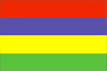

{kind=link}


![[Country map of Mauritius]](../maps/mp-map.jpg)
| Mauritius |  |
|
| | |
| Introduction |
Background: Discovered by the Portuguese in 1505, Mauritius was subsequently held by the Dutch, French, and British before independence was attained in 1968. A stable democracy with regular free elections and a positive human rights record, the country has attracted considerable foreign investment and has earned one of Africa's highest per capita incomes. Recent protests over standards of living in the Creole community have slowed economic growth.
| Geography |
Location: Southern Africa, island in the Indian Ocean, east of Madagascar
Geographic coordinates: 20 17 S, 57 33 E
Map references: World
Area:
total:
1,860 sq km
land:
1,850 sq km
water:
10 sq km
note:
includes Agalega Islands, Cargados Carajos Shoals (Saint Brandon), and Rodrigues
Area - comparative: almost 11 times the size of Washington, DC
Land boundaries: 0 km
Coastline: 177 km
Maritime claims:
continental shelf:
200 nm or to the edge of the continental margin
exclusive economic zone:
200 nm
territorial sea:
12 nm
Climate: tropical, modified by southeast trade winds; warm, dry winter (May to November); hot, wet, humid summer (November to May)
Terrain: small coastal plain rising to discontinuous mountains encircling central plateau
Elevation extremes:
lowest point:
Indian Ocean 0 m
highest point:
Mont Piton 828 m
Natural resources: arable land, fish
Land use:
arable land:
49%
permanent crops:
3%
permanent pastures:
3%
forests and woodland:
22%
other:
23% (1993 est.)
Irrigated land: 170 sq km (1993 est.)
Natural hazards: cyclones (November to April); almost completely surrounded by reefs that may pose maritime hazards
Environment - current issues: water pollution
Environment - international agreements:
party to:
Biodiversity, Climate Change, Desertification, Endangered Species, Environmental Modification, Hazardous Wastes, Law of the Sea, Marine Life Conservation, Nuclear Test Ban, Ozone Layer Protection, Ship Pollution, Whaling
signed, but not ratified:
none of the selected agreements
| People |
Population: 1,179,368 (July 2000 est.)
Age structure:
0-14 years:
26% (male 153,385; female 149,451)
15-64 years:
68% (male 401,032; female 403,295)
65 years and over:
6% (male 28,981; female 43,224) (2000 est.)
Population growth rate: 0.89% (2000 est.)
Birth rate: 16.66 births/1,000 population (2000 est.)
Death rate: 6.83 deaths/1,000 population (2000 est.)
Net migration rate: -0.93 migrant(s)/1,000 population (2000 est.)
Sex ratio:
at birth:
1 male(s)/female
under 15 years:
1.03 male(s)/female
15-64 years:
0.99 male(s)/female
65 years and over:
0.67 male(s)/female
total population:
0.98 male(s)/female (2000 est.)
Infant mortality rate: 17.73 deaths/1,000 live births (2000 est.)
Life expectancy at birth:
total population:
70.98 years
male:
66.98 years
female:
75.04 years (2000 est.)
Total fertility rate: 2.02 children born/woman (2000 est.)
Nationality:
noun:
Mauritian(s)
adjective:
Mauritian
Ethnic groups: Indo-Mauritian 68%, Creole 27%, Sino-Mauritian 3%, Franco-Mauritian 2%
Religions: Hindu 52%, Christian 28.3% (Roman Catholic 26%, Protestant 2.3%), Muslim 16.6%, other 3.1%
Languages: English (official), Creole, French, Hindi, Urdu, Hakka, Bojpoori
Literacy:
definition:
age 15 and over can read and write
total population:
82.9%
male:
87.1%
female:
78.8% (1995 est.)
| Government |
Country name:
conventional long form:
Republic of Mauritius
conventional short form:
Mauritius
Data code: MP
Government type: parliamentary democracy
Capital: Port Louis
Administrative divisions: 9 districts and 3 dependencies*; Agalega Islands*, Black River, Cargados Carajos Shoals*, Flacq, Grand Port, Moka, Pamplemousses, Plaines Wilhems, Port Louis, Riviere du Rempart, Rodrigues*, Savanne
Independence: 12 March 1968 (from UK)
National holiday: Independence Day, 12 March (1968)
Constitution: 12 March 1968; amended 12 March 1992
Legal system: based on French civil law system with elements of English common law in certain areas
Suffrage: 18 years of age; universal
Executive branch:
chief of state:
President Cassam UTEEM (since 1 July 1992) and Vice President Angidi Verriah CHETTIAR (since 28 June 1997)
head of government:
Prime Minister Navinchandra RAMGOOLAM (since 27 December 1995)
cabinet:
Council of Ministers appointed by the president on the recommendation of the prime minister
elections:
president and vice president elected by the National Assembly for five-year terms; election last held 28 June 1997 (next to be held NA 2002); prime minister and deputy prime minister appointed by the president and are responsible to the National Assembly
election results:
Cassam UTEEM reelected president and Angidi Verriah CHETTIAR elected vice president; percent of vote by the National Assembly - NA
Legislative branch:
unicameral National Assembly (66 seats - 62 elected by popular vote, 4 appointed by the election commission from the losing political parties to give representation to various ethnic minorities; members serve five-year terms)
elections:
last held on 20 December 1995 (next to be held by December 2000)
election results:
percent of vote by party - MLP/MMM 65%, MSM/MMR 20%, other 15%; seats by party - MLP 35, MMM 25, allies of MLP and MMM on Rodrigues Island 2; appointed were Rodrigues Movement 2, PMSD 1, Hizbullah 1
Judicial branch: Supreme Court
Political parties and leaders: Hizbullah [Cehl Mohamed FAKEEMEEAH]; Mauritian Labor Party or MLP [Navinchandra RAMGOOLAM] - governing party; Mauritian Militant Movement or MMM [Paul BERENGER]; Mauritian Militant Renaissance or MMR [Dr. Paramhansa NABABSING]; Mauritian Social Democrat Party or PMSD [Xavier-Luc DUVAL]; Militant Socialist Movement or MSM [Sir Anerood JUGNAUTH]; Organization of the People of Rodrigues or OPR [Louis Serge CLAIR]; Rodrigues Movement [Nicholas Von MALLY]
Political pressure groups and leaders: various labor unions
International organization participation: ACCT, ACP, AfDB, C, CCC, ECA, FAO, G-77, IAEA, IBRD, ICAO, ICFTU, ICRM, IDA, IFAD, IFC, IFRCS, ILO, IMF, IMO, Inmarsat, InOC, Intelsat, Interpol, IOC, ISO, ITU, NAM, OAU, OPCW, PCA, SADC, UN, UNCTAD, UNESCO, UNIDO, UPU, WCL, WFTU, WHO, WIPO, WMO, WToO, WTrO
Diplomatic representation in the US:
chief of mission:
Ambassador Chitmansing JESSERAMSING
chancery:
Suite 441, 4301 Connecticut Avenue NW, Washington, DC 20008
telephone:
[1] (202) 244-1491, 1492
FAX:
[1] (202) 966-0983
Diplomatic representation from the US:
chief of mission:
Ambassador Mark W. ERWIN
embassy:
4th Floor, Rogers House, John Kennedy Street, Port Louis
mailing address:
international mail: P. O. Box 544, Port Louis; US mail: American Embassy, Port Louis, Department of State, Washington, DC 20521-2450
telephone:
[230] 208-2347, 208-2354, 208-9763 through 9767
FAX:
[230] 208-9534
Flag description: four equal horizontal bands of red (top), blue, yellow, and green
| Economy |
Economy - overview: Since independence in 1968, Mauritius has developed from a low income, agriculturally based economy to a middle income diversified economy with growing industrial, financial, and tourist sectors. For most of the period, annual growth has been of the order of 5% to 6%. This remarkable achievement has been reflected in increased life expectancy, lowered infant mortality, and a much improved infrastructure. Sugarcane is grown on about 90% of the cultivated land area and accounts for 25% of export earnings. A record-setting drought severely damaged the sugar crop in 1999, however. The government's development strategy centers on foreign investment. Mauritius has attracted more than 9,000 offshore entities, many aimed at commerce in India and South Africa, and investment in the banking sector alone has reached over $1 billion. Economic performance in 1991-99 continued strong with solid growth and low unemployment.
GDP: purchasing power parity - $12.3 billion (1999 est.)
GDP - real growth rate: 4% (1999 est.)
GDP - per capita: purchasing power parity - $10,400 (1999 est.)
GDP - composition by sector:
agriculture:
10%
industry:
29%
services:
61% (1996)
Population below poverty line: 10.6% (1992 est.)
Household income or consumption by percentage share:
lowest 10%:
NA%
highest 10%:
NA%
Inflation rate (consumer prices): 6.8% (1999)
Labor force: 514,000 (1995)
Labor force - by occupation: construction and industry 36%, services 24%, agriculture and fishing 14%, trade, restaurants, hotels 16%, transportation and communication 7%, finance 3% (1995)
Unemployment rate: 2% (1996 est.)
Budget:
revenues:
$1.1 billion
expenditures:
$1.2 billion, including capital expenditures of $NA (1999 est.)
Industries: food processing (largely sugar milling), textiles, clothing; chemicals, metal products, transport equipment, nonelectrical machinery; tourism
Industrial production growth rate: 3.5% (1999 est.)
Electricity - production: 1.225 billion kWh (1998)
Electricity - production by source:
fossil fuel:
91.84%
hydro:
8.16%
nuclear:
0%
other:
0% (1998)
Electricity - consumption: 1.139 billion kWh (1998)
Electricity - exports: 0 kWh (1998)
Electricity - imports: 0 kWh (1998)
Agriculture - products: sugarcane, tea, corn, potatoes, bananas, pulses; cattle, goats; fish
Exports: $1.7 billion (f.o.b., 1999)
Exports - commodities: clothing and textiles, sugar, cut flowers, molasses
Exports - partners: UK 32%, France 19%, US 14%, Germany 6%, Italy 4% (1997)
Imports: $2.1 billion (f.o.b., 1998)
Imports - commodities: manufactured goods, capital equipment, foodstuffs, petroleum products, chemicals (1996)
Imports - partners: France 19%, South Africa 12%, India 9%, Hong Kong 7%, UK 6% (1997)
Debt - external: $1.9 billion (1998 est.)
Economic aid - recipient: $42 million (1997)
Currency: 1 Mauritian rupee (MauR) = 100 cents
Exchange rates: Mauritian rupees (MauRs) per US$1 - 25.485 (January 2000), 25.186 (1999), 22.993 (1998), 21.057 (1997), 17.948 (1996), 17.386 (1995)
Fiscal year: 1 July - 30 June
| Communications |
Telephones - main lines in use: 148,000 (1995)
Telephones - mobile cellular: 11,735 (1995)
Telephone system:
small system with good service
domestic:
primarily microwave radio relay
international:
satellite earth station - 1 Intelsat (Indian Ocean); new microwave link to Reunion; HF radiotelephone links to several countries
Radio broadcast stations: AM 5, FM 9, shortwave 2 (1998)
Radios: 420,000 (1997)
Television broadcast stations: 2 (plus 11 repeaters) (1997)
Televisions: 258,000 (1997)
Internet Service Providers (ISPs): 1 (1999)
| Transportation |
Railways: 0 km
Highways:
total:
1,910 km
paved:
1,834 km (including 36 km of expressways)
unpaved:
76 km (1998 est.)
Ports and harbors: Port Louis
Merchant marine:
total:
12 ships (1,000 GRT or over) totaling 126,358 GRT/173,079 DWT
ships by type:
cargo 3, combination bulk 2, container 4, liquified gas 1, refrigerated cargo 2 (1999 est.)
note:
a flag of convenience registry; India owns 1 ship (1998 est.)
Airports: 5 (1999 est.)
Airports - with paved runways:
total:
2
over 3,047 m:
1
914 to 1,523 m:
1 (1999 est.)
Airports - with unpaved runways:
total:
3
914 to 1,523 m:
1
under 914 m:
2 (1999 est.)
| Military |
Military branches: National Police Force (includes the paramilitary Special Mobile Force or SMF, Special Support Units or SSU, and National Coast Guard)
Military manpower - availability:
males age 15-49:
338,856 (2000 est.)
Military manpower - fit for military service:
males age 15-49:
171,183 (2000 est.)
Military expenditures - dollar figure: $11 million (FY97/98)
Military expenditures - percent of GDP: 0.3% (FY97/98)
| Transnational Issues |
Disputes - international: claims the Chagos Archipelago in UK-administered British Indian Ocean Territory; claims French-administered Tromelin Island
Illicit drugs: minor consumer and transshipment point for heroin from South Asia; small amounts of cannabis produced and consumed locally